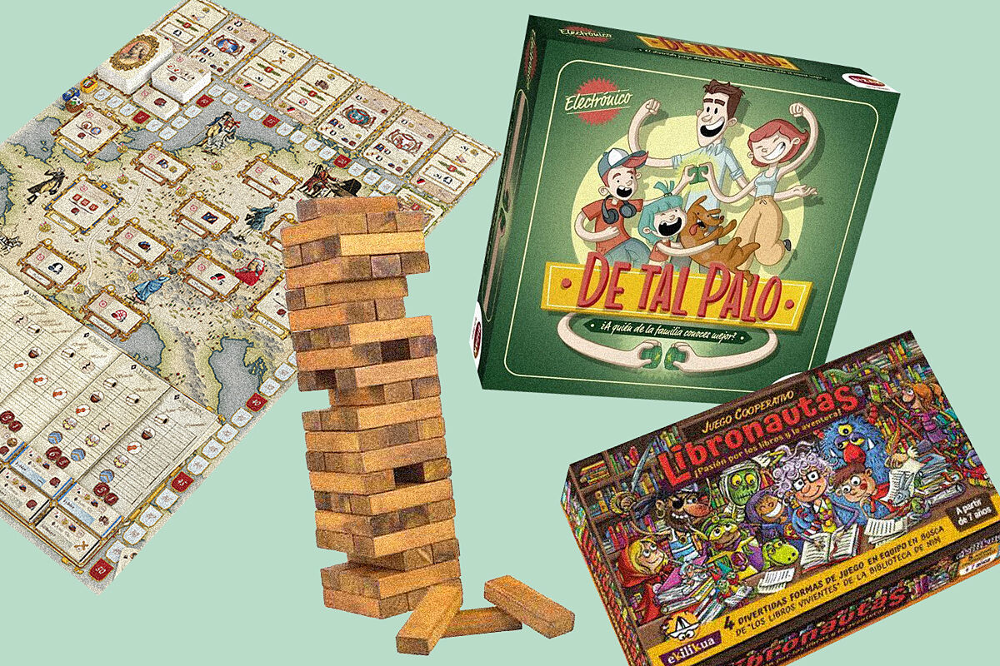
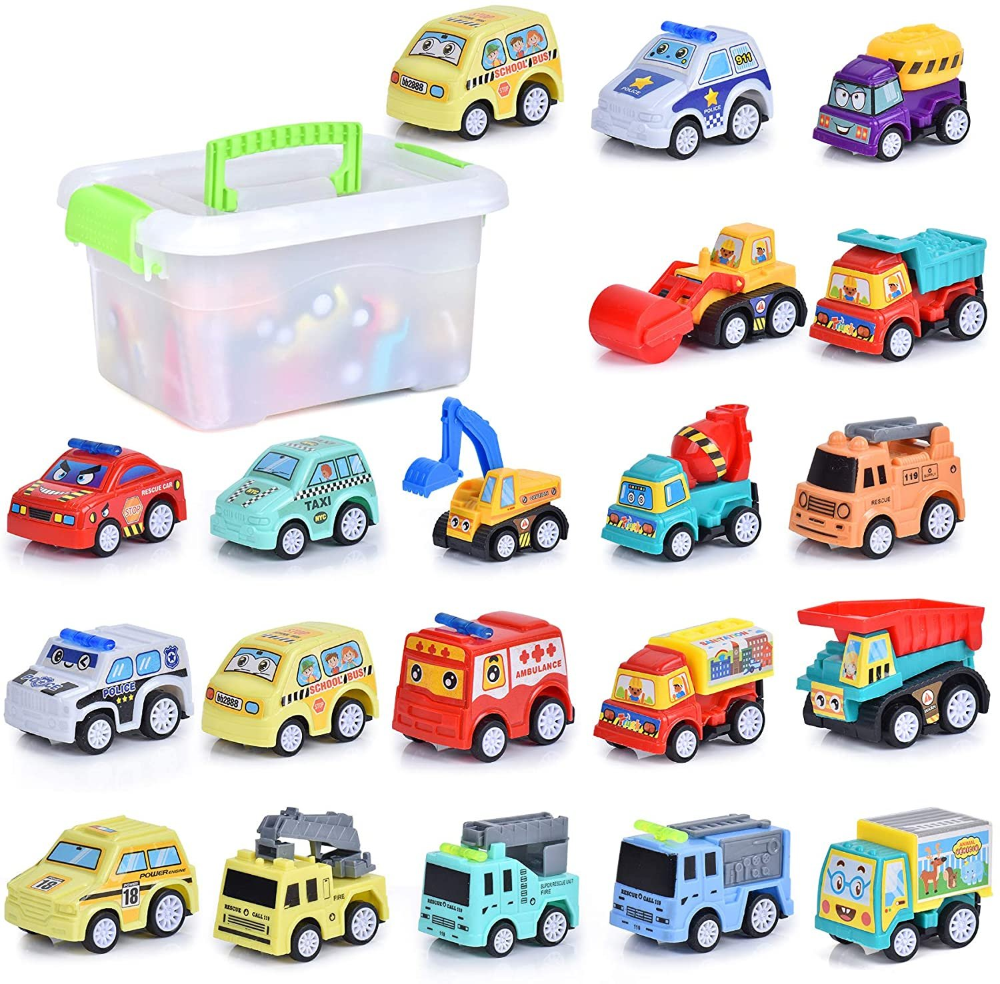
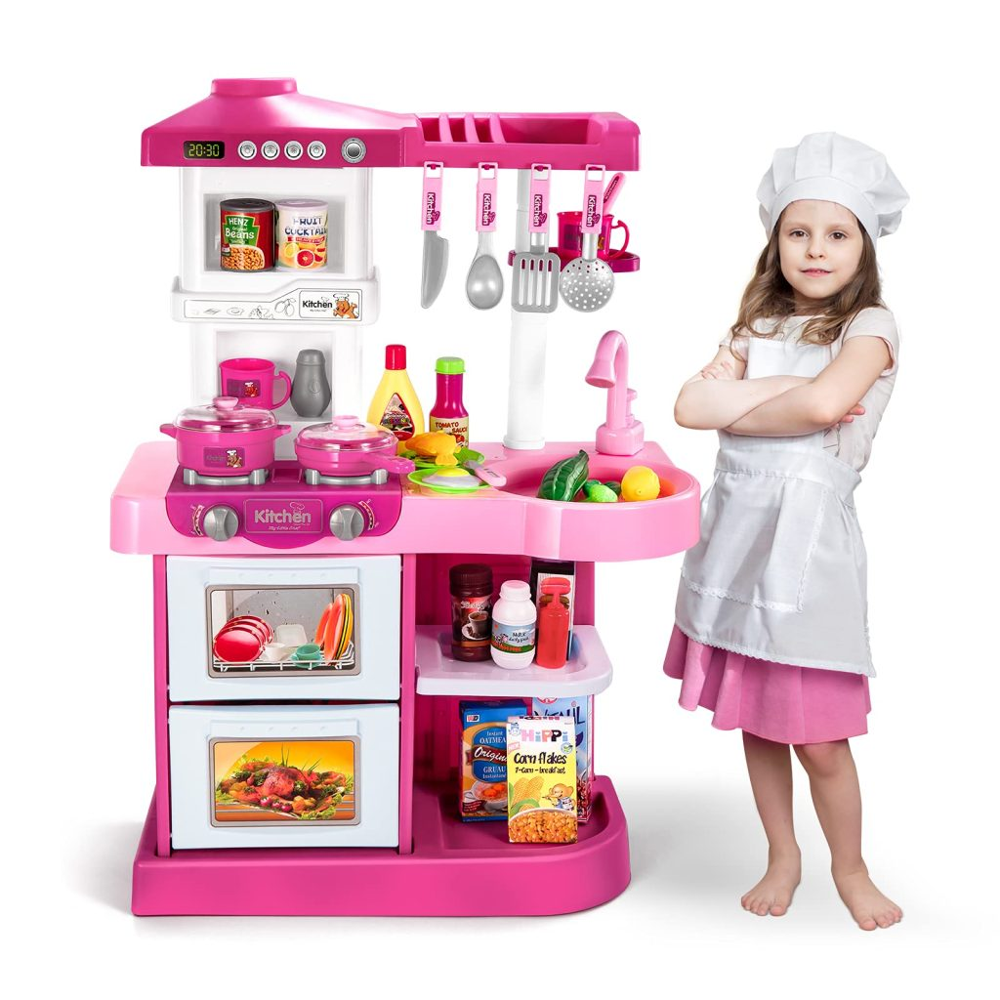
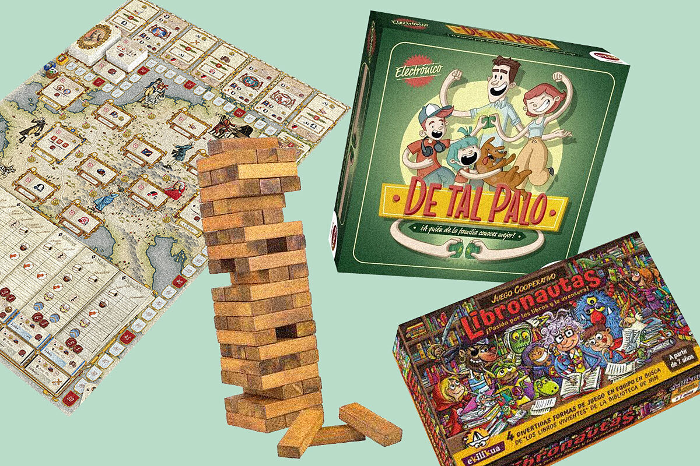
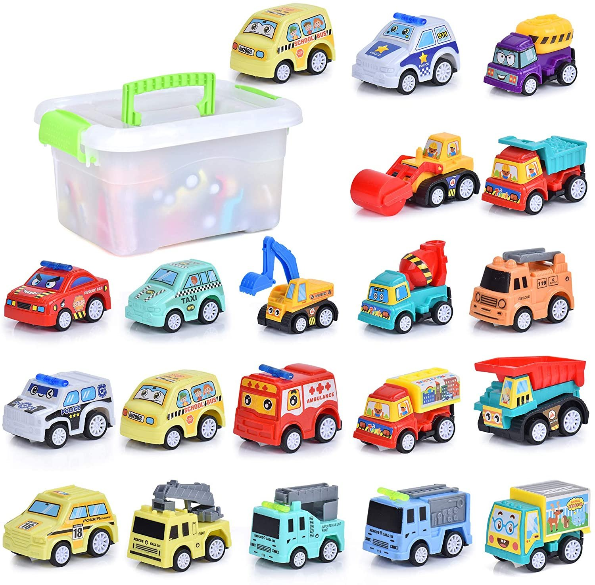
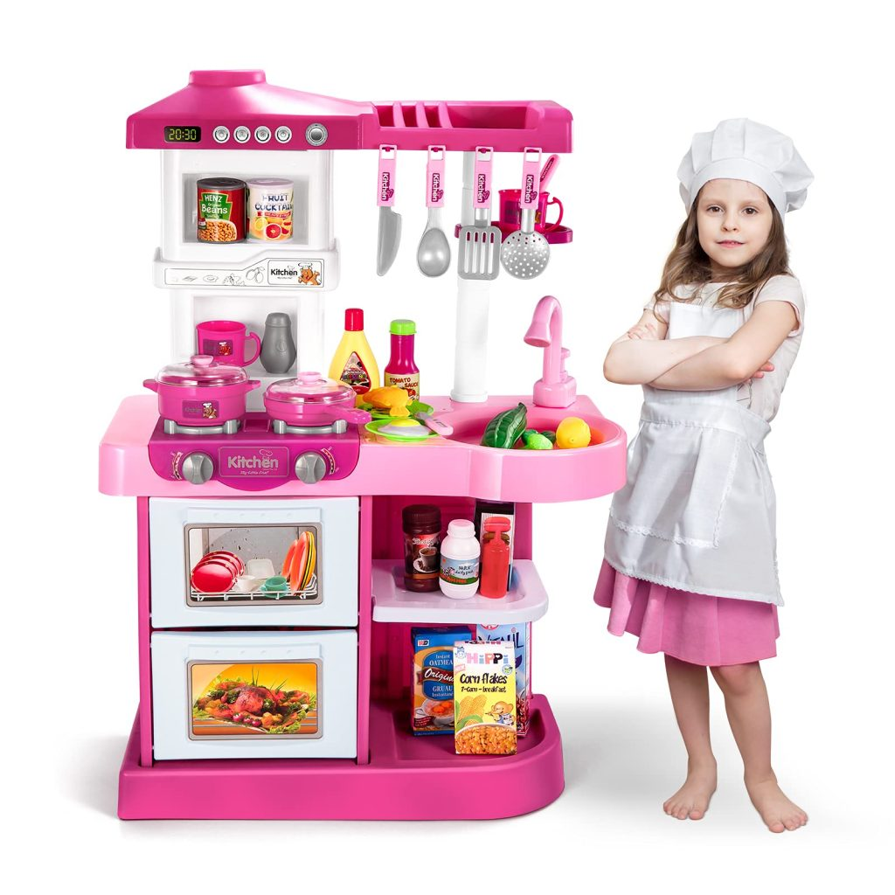
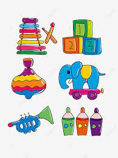

Nuestros Productos
|  |  |  |
| Juegos de Mesa | Para tu Niño | Para tu Niña |
| Para jugar y divertirse con tda la familia | Un mundo de aventuras , emisiones e imaginación | Un mundode fantasías y diversión para tu niña. |
 |
||
| Mejores precios | Calidad | Garantía |
| Tenemos una relacón directa con los fabricantes de juguetes para ofrecer los precios mas baratos | Tenemos un altó estandar de calidad para la seleccion de nuestros proveedores de juguetes | Ofrecemos una garantia de hasta un año deendidendo de la complejidad del juguete y su naturaleza de construcción |
|  |  |  |
| Juegos de Mesa | Para tu Niño | Para tu Niña |
| Para jugar y divertirse con tda la familia | Un mundo de aventuras , emisiones e imaginación | Un mundode fantasías y diversión para tu niña. |
|  |
Los juegos infantiles Estrito: 15/11/2020 por Claudia Gran parte del contenido y significado del juego infantil está construido por las actividades lúdicas en las que el niño repreenta algún papel e imita aquel aspecto más significativo de las actividades adultas y de su contacto con ellas |
Testimonios "Tiene una gran variedad de productos de muy buena calidad.La persona que me atendió fue muy cordial y me sugirió varios productos de acuerdo a la edad de mis hijos." Cesar Pedraza |
|
El juego de la infancia Estrito: 18/12/2020 Por: Karina Tienen una gran variedad de productos de muy buena calidad. La persona que me atendió fue muy cordial y me sugirió varios productos de acuerdo a la edad de mis hijos. |
|
Contacto +51 3256987 |
Nuestras tiendas Lima centro 852 Lima Norte 1085 Lima Sur 652 |
Libro de reclamaciones |
©Copyright